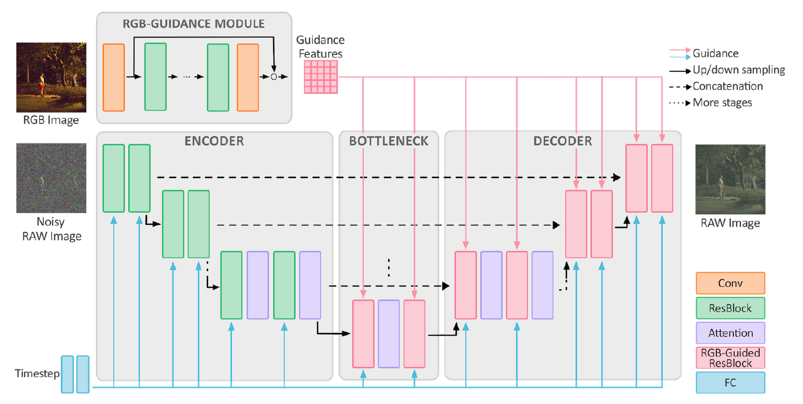
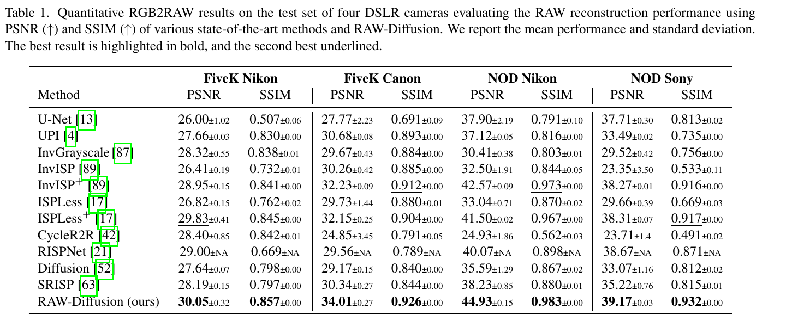
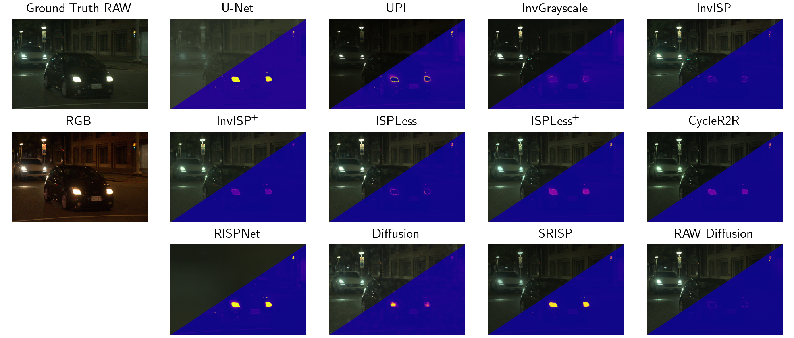
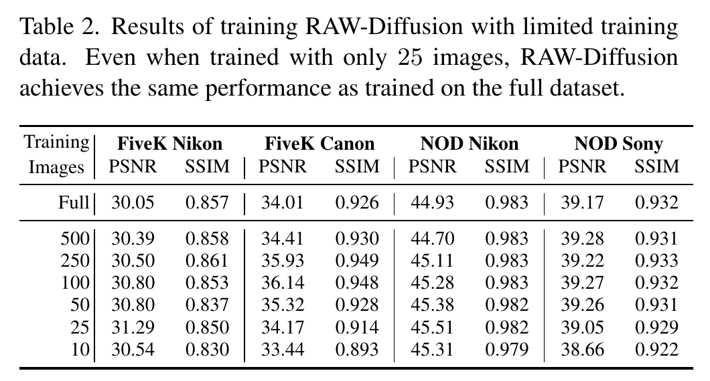
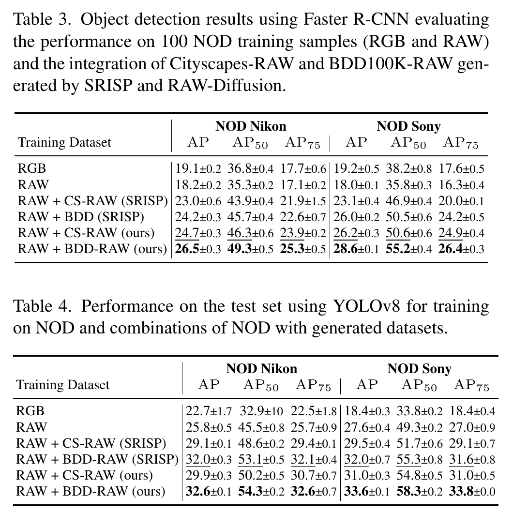
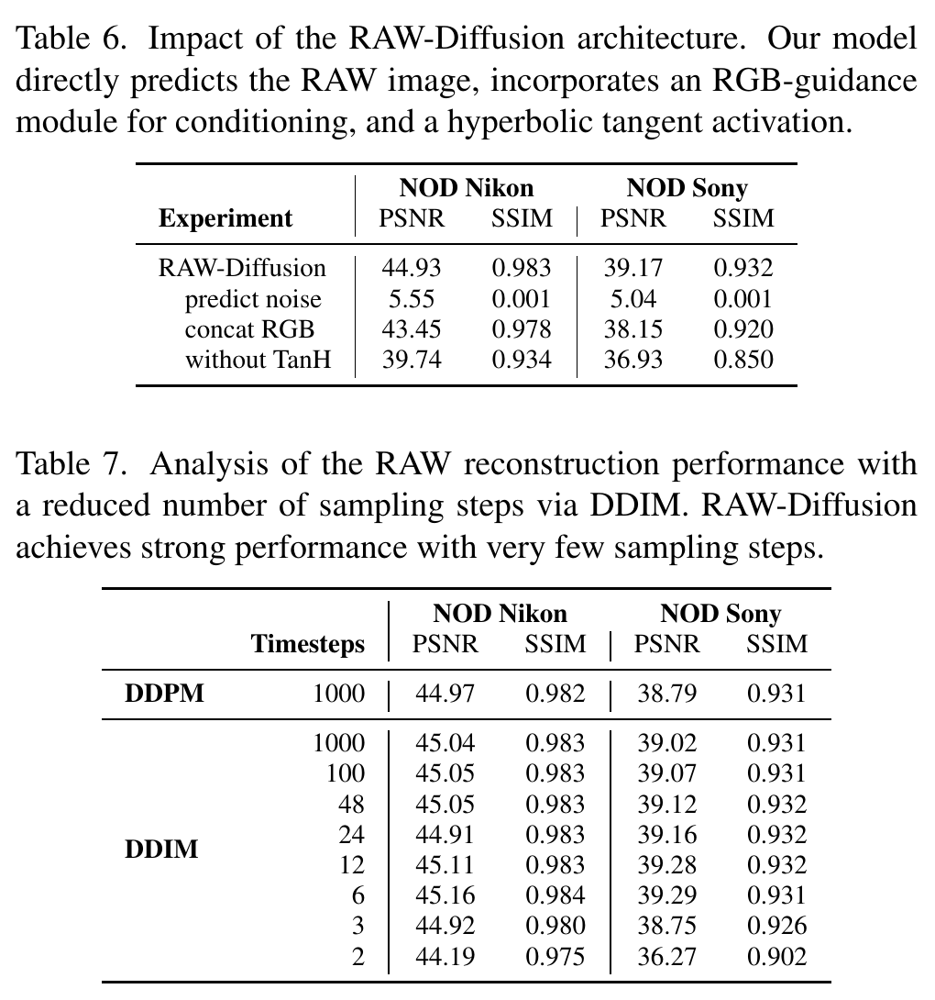
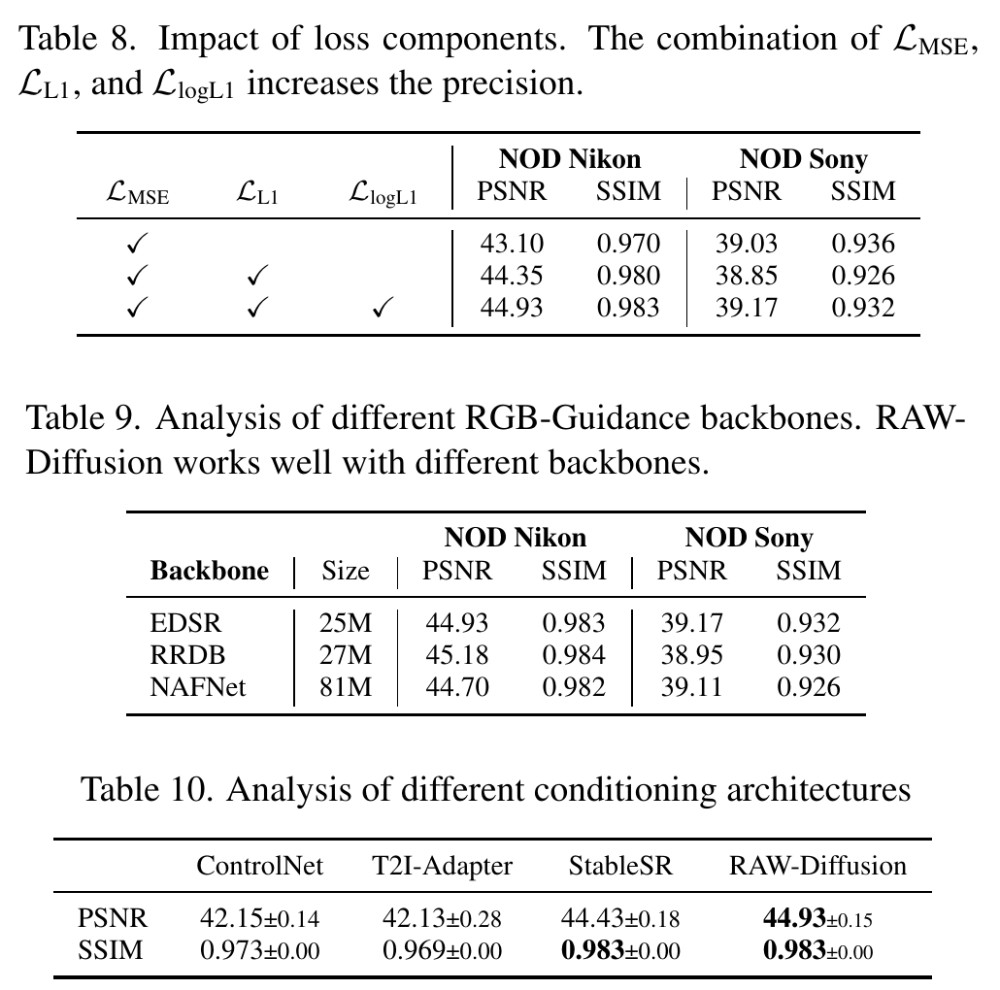

论文
RAW-Diffusion：用 RGB 引导的扩散模型把 sRGB 逆回指定相机的 RAW，几十张图就能训一台新机

代码来源说明：官方仓库 SonyResearch/RAW-Diffusion，本文引用的行号对应 commit
5fbf662（2025-02-17，"object detection training"），repo/即这份克隆。扩散部分（gaussian_diffusion.py、respace.py）改自 OpenAI guided-diffusion，SPADE 残差块思路来自 semantic-diffusion-model，README 的致谢里写明了这两项。仓库没有发布预训练权重。
专项定位：这篇放在「手机照片 → 相机画质：细节与质感迁移」专项里读（入口：phone2camera-2026 调研页）。它和 unprocessing-2018 做的是同一件事，都是把 sRGB 逆回某台相机的 RAW 来造数据，区别在于 Unprocessing 手写每一步逆 ISP，RAW-Diffusion 用几十对样本把整个逆过程学出来。本页 §6 专门回答一个具体问题：能不能用 MDRAW 里尼康 Z5 的 114 张 RAW 训一个「Z5 专用 sRGB → RAW」生成器，再把大量普通照片变成伪 Z5 RAW 来扩充训练数据。
1. 出发点：每换一块传感器就要重新采 RAW 数据
RAW 在暗光检测、去噪、超分这类任务上比 sRGB 好用，因为它保留了线性的场景辐照度和更高的量化位深（§1）。麻烦在于 RAW 数据是绑定传感器的：不同相机的光谱响应、黑白电平、噪声都不同，拿 A 相机的 RAW 训出来的模型放到 B 相机上未必能用。而大规模、带标注的数据集（COCO、Cityscapes、BDD100K）几乎全是 sRGB。
已有的 RGB→RAW 方法分两类（§2）：
- 参数化逆 ISP：Unprocessing（本文表 1 里叫 UPI）、CIE XYZ Net 这类，按 ISP 模块逐步逆回去。可解释、数据需求小，但要相机元数据或标定，而且每个模块的形式是人定的。
- 单网络端到端映射：InvISP、CycleR2R、RISPNet 等，从 (RGB, RAW) 对里直接学非线性映射。表达力强，但通常需要大量配对数据。
作者想要一个数据效率高、又不需要手写 ISP 结构的方法。他们的赌注是扩散模型：生成先验强、训练稳定，而且条件可以在多个分辨率上注入。论文还声称这是第一个跑赢 SOTA 的扩散式 RGB→RAW 方法；此前 Liu 等人的扩散逆 ISP（表 1 里的 "Diffusion [52]"）只能在 64×64 小块上训，块再大性能就崩（§4.3）。
RGGB 打包（packed RAW）
把 Bayer 马赛克每个 2×2 块的 R、G1、G2、B 拆成 4 个通道，得到一张长宽各减半的 4 通道图。本文所有 RAW 都以这种形式进出网络。
黑电平 / 白电平
传感器在完全无光时的读数偏置，以及饱和时的最大读数。用 (x−黑)/(白−黑) 归一化到 [0,1]。
DDPM / DDIM
DDPM 训练时逐步加噪、推理时一步步去噪，默认 1000 步；DDIM 是同一个训练好的模型的确定性快速采样器，可以跳着走，几步到几十步。
x₀ 预测 vs ε 预测
扩散网络可以输出「加进去的噪声 ε」，也可以直接输出「干净图 x₀」。本文用后者，消融里前者完全失败。
SPADE
空间自适应归一化：先把特征做无参归一化，再用条件图预测的逐像素 γ、β 去缩放和平移。最早用于语义图生成图像。
EDSR
一个只有卷积和残差块、没有 BN 的超分网络。本文去掉它的上采样头，只拿来当 RGB 特征提取器。
对数 L1（logL1）
在 log 空间比较预测和真值，等价于看相对误差，暗部的小绝对误差会被放大。来自 HDR 重建工作。
P2 权重
按噪声水平给扩散损失加权，信噪比越高（越接近干净图）权重越小。论文没提，代码里有。
FiveK / NOD
MIT-Adobe FiveK：尼康 D700 590 张、佳能 5D 777 张 RAW。NOD：夜间目标检测数据集，Sony RX100 VII 约 3.2k、尼康 D750 约 4.0k 张，带框标注。
2. 方法：RGB 特征逐层调制一个直接预测 RAW 的扩散 U-Net
2.1 数据：输入和输出到底是什么
这一节是后面讨论「能不能拿来造 Z5 数据」的基础，所以先把数据格式说清楚。论文只写了一句「所有 RAW 都用 RawPy 库处理得到对应的 RGB 图」（§4.1），具体做法要看预处理脚本：
repo/datasets/fivek_process.py:L94-L122 — RGB 由 rawpy 默认参数渲染再 2× 面积下采样；RAW 按固定位置拆成 RGGB 四通道
raw_file = rawpy.imread(raw_path)
rgb_img = raw_file.postprocess()
h, w, c = rgb_img.shape
bayer_image = raw_file.raw_image_visible
rgb_img_shrink = cv2.resize(
rgb_img, (w // 2, h // 2), interpolation=cv2.INTER_AREA
).astype(np.uint8)
r_raw = bayer_image[0::2, 0::2][:, :, np.newaxis]
g1_raw = bayer_image[0::2, 1::2][:, :, np.newaxis]
g2_raw = bayer_image[1::2, 0::2][:, :, np.newaxis]
b_raw = bayer_image[1::2, 1::2][:, :, np.newaxis]
rggb_img = np.concatenate([r_raw, g1_raw, g2_raw, b_raw], axis=-1)
cwb = raw_file.camera_whitebalance
if orientation == 8:
rggb_img = np.rot90(rggb_img, k=1)
elif orientation == 6:
rggb_img = np.rot90(rggb_img, k=3)
elif orientation == 3:
rggb_img = np.rot90(rggb_img, k=2)
if camera_name == "Canon EOS 5D":
rggb_img = np.maximum(rggb_img - 127.0, 0)
rggb_img = rggb_img.astype(np.float32)
由此可以确定三件事：
- RGB 不是机内 JPEG。 它是
raw_file.postprocess()用默认参数从同一张 RAW 渲出来的。NOD 也一样：repo/datasets/utils/nod_loader.py:L7-L39即使标注里写的是.JPG，也会去读对应的 NEF/ARW 再postprocess()。按 rawpy 文档，默认参数是 AHD 去马赛克、日光白平衡（use_camera_wb和use_auto_wb都为 False）、sRGB 原色、BT.709 gamma (2.222, 4.5)、自动提亮、8-bit 输出，降噪默认关闭。所以模型学的是 LibRaw 这套简单、全局、无锐化无降噪 ISP 的逆，不是尼康、索尼机内 ISP 的逆。 - RGB 和 RAW 同分辨率、像素对齐。 RGB 先渲成全分辨率，再用
INTER_AREA缩到一半，正好和 RGGB 打包后的尺寸一样。网络的输入是 H/2×W/2×3，输出是 H/2×W/2×4。 - CFA 排列是写死的。 代码不读
raw_pattern，直接认定[0::2,0::2]是 R。换一台 Bayer 排列不是 RGGB 的相机时，四个通道的含义会错位，需要自己先裁边或翻转。
预处理还把每张图切成 3×3 个块存盘（repo/datasets/utils/utils.py:L16-L52，块边长取 32 的倍数），训练时再从块里随机裁 256×256。加载时的归一化如下：
repo/rawdiffusion/datasets/raw_image_dataset.py:L57-L89 — RGB 除以 255；RAW 用黑/白电平归一化并截到 [0,1]；两者都映射到 [−1,1]
if os.path.splitext(rgb_path)[1] == ".npy":
rgb_data = np.load(rgb_path)
else:
rgb_data = imageio.imread(rgb_path)
rgb_data = rgb_data.astype(np.float32) / 255
if not self.rgb_only:
raw_data_np = np.load(raw_path)
raw_data = raw_data_np["raw"]
raw_data = (raw_data.astype(np.float32) - self.raw_min_value) / (
self.raw_max_value - self.raw_min_value
)
else:
raw_data = np.zeros(
(rgb_data.shape[0], rgb_data.shape[1], 4), dtype=np.float32
)
if rgb_data.shape[:2] != raw_data.shape[:2]:
raise ValueError(
f"target_rgb_img.shape: {rgb_data.shape}, input_raw_img.shape: {raw_data.shape}, file_name: {raw_path}, {rgb_path}"
)
if self.transforms is not None:
raw_data, rgb_data = self.transforms(raw_data, rgb_data)
raw_data = np.clip(raw_data, 0, 1)
raw_data = self.np2tensor(raw_data).float()
rgb_data = self.np2tensor(rgb_data).float()
raw_data = raw_data * 2 - 1
rgb_data = rgb_data * 2 - 1
—— 翻译: RAW 先减黑电平 b、除以动态范围 (w−b)，截到 [0,1]，再线性拉到 [−1,1]，这就是扩散模型要生成的 x₀；8-bit 的 RGB 同样拉到 [−1,1]，作为条件 c。黑白电平按相机写死在 camera.py 里（例如 NOD 尼康 D750 黑电平 600、白电平 16383）。
有个细节论文没提：np.clip(raw_data, 0, 1) 会把低于黑电平的读数全部截成 0。暗光 RAW 里读出噪声是围绕黑电平上下对称抖动的，camera.py 里 NOD 尼康记录的 min_value=284，远低于黑电平 600，说明数据里确实有大量负半边的噪声。默认 min_mode: 'black_level'（repo/configs/rawdiffusion.yaml:L28）把这半边全部截掉，训练目标里的暗部噪声分布因此被「半波整流」了。§6 讨论噪声时还会用到这一点。
2.2 扩散框架：直接预测干净 RAW
前向过程是标准 DDPM（论文 Eq. 1）：
—— 翻译: 每一步往 RAW 上加一点高斯噪声，加到第 t 步时，x_t 等于「缩小了 √ᾱ_t 倍的干净 RAW」加「标准差 √(1−ᾱ_t) 的噪声」。β 从 0.0001 线性涨到 0.02，共 T=1000 步；走到 t=500 时 ᾱ≈0.078，信号只剩约 28%（√0.078），到 t=999 时基本只剩噪声。
这里的「噪声」是扩散过程自己加的高斯噪声，和传感器噪声无关。网络 \(f_\theta\) 的输入是 \((x_t, t, c)\)，输出直接当作干净 RAW 的估计：
—— 翻译: 给网络看一张被噪声污染程度为 t 的 RAW、当前步数 t 和对应的 RGB，让它直接猜出干净 RAW。最后套一个 tanh，把输出硬性限制在 (−1,1)，和 x₀ 的取值范围一致。
推理时从纯噪声出发，用 DDIM（\(\eta=0\)，确定性）在稀疏的步上迭代：
—— 翻译: 每一步先让网络猜一个干净 RAW，再从当前 x_t 里反推出「这次猜测隐含的噪声」，然后按更低的噪声水平 t' 把两者重新混合，得到下一步的输入。η=0 时不再注入新的随机数，整条轨迹只由起点噪声决定。
为什么不用图像扩散里最常见的 ε 预测？表 6 给的答案是 ε 预测在 NOD 尼康上只有 5.55 dB，基本是废图。作者的解释是「图像域常用的参数化不适用于 RAW」。我对这个数字有保留，§4 第 4 条会说明：按仓库默认配置跑 ε 预测，代码本身就会出问题。
2.3 RGB 引导：EDSR 抽特征 + SPADE 式调制
引导模块是去掉上采样头的 EDSR：一层 3×3 卷积把 RGB 升到 64 通道，接 4 个残差块（卷积-ReLU-卷积 + 跳连），再一层卷积，最后与第一层的输出相加（§3.2.1，repo/rawdiffusion/models/rgb_guidance_module/edsr.py:L43-L87，配置见 repo/configs/model/rgb_guidance_module/edsr.yaml：n_resblocks: 4、n_feats: 64、bn: False）。得到的 \(F_{\text{RGB}} \in \mathbb{R}^{64\times H\times W}\) 与 RAW 打包图同分辨率，每次前向只算一遍，然后被广播到瓶颈和解码器的各层。
注入方式是论文 Eq. 3：
—— 翻译: 扩散特征 F^i 先做不带可学参数的 GroupNorm，把每组通道的均值方差抹平；再把 RGB 特征缩放到这一层的分辨率，用两个小卷积预测出与 F^i 同形状的逐像素缩放图 γ 和平移图 β，乘上去、加上去。也就是说，「这个位置的 RAW 特征应该多强、偏向哪边」由 RGB 在这个位置的内容决定。
类比：普通的条件拼接相当于把参考照片和一张噪声图钉在一起交给画师，画师自己决定看多少参考。SPADE 调制相当于在每一道工序（每个残差块、每个分辨率）上都给画师一张逐像素的「调色单」，告诉他这块区域的亮度、通道比例该放大多少、平移多少。RGB 的空间结构因此直接压到了每一层特征上。
repo/rawdiffusion/models/layer.py:L122-L145 — SPADEGroupNorm：无仿射的 GroupNorm + 由 RGB 特征预测逐像素 γ/β（Eq. 3）
class SPADEGroupNorm(nn.Module):
def __init__(self, norm_nc, label_nc, normalization_fn, eps=1e-5):
super().__init__()
self.norm = normalization_fn(norm_nc, affine=False)
self.eps = eps
nhidden = 128
self.mlp_shared = nn.Sequential(
Conv2DMod(label_nc, nhidden, kernel_size=3, padding=1), nn.ReLU()
)
self.mlp_gamma = Conv2DMod(nhidden, norm_nc, kernel_size=3, padding=1)
self.mlp_beta = Conv2DMod(nhidden, norm_nc, kernel_size=3, padding=1)
def forward(self, x, cond):
x = self.norm(x)
cond = F.interpolate(cond, size=x.size()[2:], mode="bilinear")
actv = self.mlp_shared(cond)
gamma = self.mlp_gamma(actv)
beta = self.mlp_beta(actv)
# apply scale and bias
return x * (1 + gamma) + beta
与论文对照：「共享一层卷积 + ReLU，再各接一层卷积分别出 γ 和 β」「双线性插值缩放引导特征」都一一对应，隐藏层 128 通道是论文没写的。Down(·) 用的是不带抗混叠的 F.interpolate(mode="bilinear")，在 1/16、1/32 分辨率的深层，引导特征相当于被隔点采样。
每个 RGB 引导残差块里两处 GroupNorm 都换成了 SPADE，时间步嵌入的 scale/shift 叠在第二个 SPADE 之后：
repo/rawdiffusion/models/residual_blocks.py:L288-L309 — RGBGuidedResidualBlock 前向：in_norm/out_norm 都由 RGB 调制，再叠时间步的 (1+scale)·h+shift
if self.updown:
in_rest, in_conv = self.in_layers[:-1], self.in_layers[-1]
h = self.in_norm(x, cond)
h = in_rest(h)
h = self.h_upd(h)
x = self.x_upd(x)
h = in_conv(h)
else:
h = self.in_norm(x, cond)
h = self.in_layers(h)
emb_out = self.emb_layers(emb).type(h.dtype)
while len(emb_out.shape) < len(h.shape):
emb_out = emb_out[..., None]
if self.use_scale_shift_norm:
scale, shift = th.chunk(emb_out, 2, dim=1)
h = self.out_norm(h, cond) * (1 + scale) + shift
h = self.out_layers(h)
else:
h = h + emb_out
h = self.out_norm(h, cond)
h = self.out_layers(h)
return self.skip_connection(x) + h
第二个归一化后面先乘 RGB 给的 (1+γ)，再乘时间步给的 (1+scale)：同一个位置的特征被「内容」和「噪声水平」两路条件依次调制。这与论文 §3.2.3「RGB 调制包住残差块里的两次 group normalization」的描述一致。
2.4 拓扑：编码器只看噪声 RAW，引导只进瓶颈和解码器
repo/rawdiffusion/models/rawdiffusion.py:L193-L213 — 瓶颈与解码器的每个残差块都用 resblock_guidance（编码器用的是 resblock_standard）
self.middle_block = TimestepEmbedSequential(
resblock_guidance(
ch,
),
(attention(ch) if mid_attention else nn.Identity()),
resblock_guidance(
ch,
),
)
self._feature_size += ch
self.output_blocks = nn.ModuleList([])
for level, mult in list(enumerate(channel_mult))[::-1]:
for i in range(num_res_blocks + 1):
ich = input_block_chans.pop()
layers = [
resblock_guidance(
ch + ich,
out_channels=int(model_channels * mult),
)
]
编码器用的是 resblock_standard（L155-L162），它是 TimestepBlock 而不是 CondTimestepBlock，TimestepEmbedSequential 根本不会把 RGB 传给它（repo/rawdiffusion/models/residual_blocks.py:L44-L52）。这和图 1 一致：编码器只负责理解当前的噪声 RAW，内容信息全部从瓶颈和解码器注入。
具体规模（论文表 11 与 repo/configs/rawdiffusion.yaml:L33-L55、repo/rawdiffusion/config.py:L1-L16 一致）：基础 32 通道，通道倍率 (1,1,2,2,4,4)，共 5 次下采样，所以输入边长必须是 32 的倍数；每级 2 个残差块，GroupNorm 8 组；在 1/16 和 1/32 分辨率上加自注意力（训练块 256 时对应 16×16、8×8）。输出层是 GroupNorm-SiLU-零初始化卷积，再接 tanh（repo/rawdiffusion/models/rawdiffusion.py:L236-L244, L277-L278）。论文表 9 标注 EDSR 版本的 Size 为 25M；EDSR 引导模块本身只有 4 个 64 通道残差块，所以这 25M 应该主要是 U-Net 和大量 SPADE 卷积。
2.5 损失：MSE + L1 + 对数 L1，代码里还乘了 P2 权重
论文 §3.3 的目标函数是三项相加：
—— 翻译: 前两项在 [−1,1] 尺度上比较预测 RAW 和真值 RAW 的平方误差和绝对误差；第三项先把两者都映回 [0,1]，再取对数比较，相当于比相对误差。RAW 的像素值大量挤在暗部，前两项几乎看不到暗部的误差，第三项专门补这一块。
数值例子：设 ε=1/255≈0.0039（代码取值）。暗部真值 0.01、预测 0.02，绝对误差 0.01，log 误差为 ln(0.0239/0.0139)≈0.54；亮部真值 0.51、预测 0.52，绝对误差同样是 0.01，log 误差只有 ln(0.5239/0.5139)≈0.019。同样的绝对误差，暗部在 logL1 里的分量大约是亮部的 28 倍。
代码在三项之外还乘了一个论文没写的逐时间步权重：
repo/rawdiffusion/gaussian_diffusion.py:L861-L892 — 目标是 x₀；三项损失都乘 P2 权重 1/(1+SNR)；logL1 在 [0,1] 尺度上算
target = {
ModelMeanType.PREVIOUS_X: self.q_posterior_mean_variance(
x_start=x_start, x_t=x_t, t=t
)[0],
ModelMeanType.START_X: x_start,
ModelMeanType.EPSILON: noise,
}[self.model_mean_type]
assert model_output.shape == target.shape == x_start.shape
# P2 weighting
weight = _extract_into_tensor(
1 / (self.p2_k + self.snr) ** self.p2_gamma, t, t.shape
)
target_normalized = (target + 1) / 2
model_output_normalized = (model_output + 1) / 2
rec_loss = 0.0
if weight_l2 > 0.0:
mse = weight * mean_flat((target - model_output) ** 2)
terms["mse"] = mse
rec_loss += weight_l2 * mse
if weight_l1 > 0.0:
l1 = weight * mean_flat(th.abs(target - model_output))
terms["l1"] = l1
rec_loss += weight_l1 * terms["l1"]
if weight_logl1 > 0.0:
logl1 = weight * logl1_loss(model_output_normalized, target_normalized)
terms["logl1"] = logl1
rec_loss += weight_logl1 * terms["logl1"]
logl1_loss 本身（repo/rawdiffusion/losses.py:L83-L87）就是 torch.log(x + 1/255) 的差的绝对值均值，注释说 ε 取自 HDR-CNN 的训练代码，和论文 §3.3 的定义一致。不一致的是 weight：初始化时 p2_gamma = p2_k = 1、snr = ᾱ/(1−ᾱ)（repo/rawdiffusion/gaussian_diffusion.py:L171-L175），代入后
—— 翻译: 每个样本的损失乘上「这一步噪声占的比例」。噪声越大，权重越接近 1；接近干净图的时间步权重接近 0。
按线性 β 表算一下：t=10 时 w≈0.002，t=50 时 0.03，t=100 时 0.10，t=300 时 0.61，t=500 时 0.92，1000 步平均约 0.72。训练信号几乎全部来自中高噪声的时间步，低噪声、负责最后一层细节修饰的时间步只拿到很小的梯度。
这个因子的写法（p2_k、p2_gamma）来自 P2 weighting（Choi et al., CVPR 2022），但用法变了。P2 原文把 \(1/(k+\mathrm{SNR})^\gamma\) 乘在 ε 损失上，而 ε 损失恰好等于 SNR(t) 倍的 x₀ 损失，所以原版 P2 折算到 x₀ 上的权重是 \(\mathrm{SNR}/(1+\mathrm{SNR}) = \bar\alpha_t\)，低噪声步的权重接近 1。RAW-Diffusion 预测的是 x₀，却把同一个因子直接乘在 x₀ 损失上，等效权重变成 \(1-\bar\alpha_t\)，在低噪声一端和原版正好相反。这是有意设计还是沿用代码时的副作用，论文没有交代，也没有做消融；只看论文复现的人会得到不同的损失。§6 讨论「生成的 RAW 质感是否真实」时还会回到这里。
2.6 训练与采样设置
论文 §4.2 与补充表 11：AdamW、lr 1e-4 线性降到 0、不加 weight decay、batch 4、训练 70k 步，随机裁 256×256 并做旋转和翻转，单张 V100 16GB，每组实验跑 3 个种子。代码与之一致（repo/configs/rawdiffusion.yaml:L7-L31，repo/train.py:L319-L345），另外两点论文没写：所有残差块默认打开梯度检查点（use_checkpoint: True），用时间换显存；每个 epoch 只跑 1000 个 batch（repo/train.py:L397-L406）。推理默认是 DDIM 24 步（diffusion_val.timestep_respacing: ddim24），README 里生成 BDD100K-RAW 时改成了 ddim6。
3. 结论：重建 PSNR 全面领先，25 张图够用，DDIM 6 步够用
3.1 RGB2RAW 重建

| 数据集 | RAW-Diffusion | 最强基线 | 差距 | UPI（Unprocessing） |
|---|---|---|---|---|
| FiveK Nikon | 30.05 / 0.857 | ISPLess⁺ 29.83 / 0.845 | +0.22 dB | 27.66 |
| FiveK Canon | 34.01 / 0.926 | InvISP⁺ 32.23 / 0.912 | +1.78 dB | 30.68 |
| NOD Nikon | 44.93 / 0.983 | InvISP⁺ 42.57 / 0.973 | +2.36 dB | 37.12 |
| NOD Sony | 39.17 / 0.932 | RISPNet 38.67 / 0.871 | +0.50 dB | 33.49 |
- FiveK Nikon 上的领先只有 0.22 dB，ISPLess⁺ 的种子标准差是 ±0.41，这一格的优势在统计上并不稳。领先较大的是 FiveK Canon 和 NOD Nikon。
- NOD 的 PSNR 普遍在 40 左右，比 FiveK 高 10 dB 以上。这不代表 NOD 更容易还原：NOD 是夜景，归一化后大部分像素接近 0，线性空间的 MSE 天然就小。跨数据集比较 PSNR 没有意义。
- 手写逆 ISP 的 UPI 在四个集上落后 2.4–7.8 dB。差距最大的是两个 NOD 集（−7.81、−5.68），也就是暗光、RAW 分布高度偏斜的场景。
- 定性结果（下图）中，基线的误差主要集中在车灯这类高光和饱和区域，RAW-Diffusion 的误差图几乎全暗。

3.2 少样本：25 张图与全量持平

- 25 张：FiveK Nikon 31.29（全量 30.05）、FiveK Canon 34.17（34.01）、NOD Nikon 45.51（44.93）、NOD Sony 39.05（39.17）。
- 10 张：FiveK Nikon 30.54、NOD Nikon 45.31 仍不低于全量；FiveK Canon 降到 33.44（−0.57），NOD Sony 降到 38.66（−0.51）。
- 「全量」并不是最好的一行。FiveK Canon 用 100 张时达到 36.14，比全量高 2.1 dB。作者给出两条解释：全量训练按 epoch 走、小集按迭代重复采样；以及小测试集和训练集之间的分布差异。这一节的结论应该读成「几十张图已经接近这个评测协议的天花板」，而不能读成「图越少越好」。
- 对照代码：子集训练用
RandomSampleDataset把数据集长度撑到与全量相同的块数（例如 FiveK Nikonresample_dataset_size: 4509= 501 张 × 9 块，repo/configs/dataset/train/fivek_nikon_subsample.yaml），每次__getitem__有放回地随机抽（repo/rawdiffusion/datasets/dataset_wrapper.py:L21-L34）。所以「25 张」实际是 25×9=225 个块，每步再随机裁 256×256、随机旋转翻转。
3.3 下游：把 BDD100K / Cityscapes 转成「NOD 相机的 RAW」

流程：用 100 张 NOD 图训 RAW-Diffusion，再把 Cityscapes（5000 张）和 BDD100K（10 万张关键帧）的 RGB 图逐张转成伪 RAW。生成用 DDIM 24 步或 6 步（§4.5）。
- Faster R-CNN，NOD 尼康：只用 100 张真实 RAW 时 AP 18.2，加 BDD100K-RAW（本文）后 26.5，加 SRISP 生成的版本 24.2。索尼：18.0 → 28.6（SRISP 26.0）。
- YOLOv8 结论相同但差距更小：尼康 25.8 → 32.6，SRISP 32.0。
- 零样本（表 5，只用生成数据、不用任何 NOD 图）：BDD100K-RAW 训练的 Faster R-CNN 在 NOD 尼康上 AP 22.0，高于用 100 张真实 RAW 训练的 18.2。Cityscapes-RAW 只有 12.0，作者归因于 Cityscapes 全是白天场景。
- 补充表 16 有一个重要对照：不转 RAW、直接把 BDD100K 的 RGB 图混进去，Faster R-CNN 也有 24.5，只比 BDD100K-RAW 低 2.0；YOLOv8 上则是 27.3 vs 32.6。也就是说，大部分收益来自「多了 10 万张带标注的场景」，RGB→RAW 转换的额外贡献在 2–5 AP。
- 混合比（论文 Fig. 5）：p_gen 从 0 增大时 AP 单调上升，在 0.95–0.975 达到峰值；p_gen=1（完全不用真实图）时骤降回零样本水平。
3.4 消融决策表


| 组件 | 起点 | 消融方向 | 最终选择 | 为什么 |
|---|---|---|---|---|
| 预测目标 | 直接预测 x₀ | 改成预测 ε | x₀ | ε 预测在 NOD 尼康 / 索尼上只有 5.55 / 5.04 dB。作者归因于 RAW 值分布偏斜；但 §4 第 4 条指出默认配置下 ε 预测会和 tanh、logL1 冲突，这个对照可能不公平 |
| RGB 注入方式 | SPADE 调制瓶颈 + 解码器 | 把 RGB 拼到噪声 RAW 输入上 | SPADE | 拼接版 43.45 / 38.15，比 SPADE 低 1.5 / 1.0 dB。逐层逐像素调制让 RGB 的空间结构在深层也不会被稀释 |
| 输出激活 | tanh | 去掉 | tanh | 去掉后 39.74 / 36.93，掉 5.2 / 2.2 dB。tanh 把输出卡在 x₀ 的合法区间里，配合 logL1 不会出现负值进 log |
| 损失 | MSE + L1 + logL1 | 只 MSE；MSE + L1 | 三项都要 | 尼康 43.10 → 44.35 → 44.93 单调上升；索尼 39.03 → 38.85 → 39.17 不单调，且只用 MSE 时 SSIM（0.936）反而最高。logL1 的收益集中在暗部，跟数据集的亮度分布有关 |
| 引导骨干 | EDSR（总 25M） | RRDB 27M / NAFNet 81M | EDSR | 三者 PSNR 相差不超过 0.25 dB，NAFNet 参数翻三倍也没有提升。RGB→特征这一步不是瓶颈 |
| 条件架构 | 本文 | ControlNet / T2I-Adapter / StableSR | 本文 | 42.15 / 42.13 / 44.43 vs 44.93（NOD 尼康）。ControlNet 只在第一层后相加，T2I-Adapter 只注入编码器，StableSR 只调制残差之前的特征 |
| 采样步数 | DDPM 1000 | DDIM 1000 → 2 | DDIM 6–24 | DDIM 6 步 45.16 / 39.29，与 1000 步持平；3 步、2 步在索尼上掉到 38.75 / 36.27。说明逆过程几乎由 RGB 唯一决定，不需要长链采样 |
| 训练数据量 | 全量（数百到数千张） | 500 → 10 张 | 25 张起即可 | 见表 2。评测协议下 25 张已饱和；10 张在 Canon / 索尼上掉约 0.5 dB |
| 生成数据混合比 | p_gen=0 | 0 → 1 | 0.95 | 只用生成数据时 AP 骤降，留 2.5%–5% 的真实图做锚点效果最好 |
表 7 揭示了这个模型的实际性质：DDIM 2 步在 NOD 尼康上仍有 44.19 dB，比 1000 步只低 0.8 dB。对一个以 PSNR 为目标、x₀ 预测、且 RGB 几乎完全决定答案的任务，扩散模型的行为接近一个「带迭代修正的条件回归器」，生成的随机性很小。这一点对 §6 的噪声和质感讨论很关键。
4. 实现细节与「论文 vs 代码」核对
- 损失乘了论文没写的 P2 权重。所有三项损失都乘 \(w_t = 1-\bar\alpha_t\)（
repo/rawdiffusion/gaussian_diffusion.py:L171-L175, L870-L892），低噪声时间步几乎不参与训练。论文 §3.3 写的是三项直接相加，没有消融这个权重。 - RGB 是 rawpy 默认渲染，不是机内 JPEG（
repo/datasets/fivek_process.py:L94-L102，repo/datasets/utils/nod_loader.py:L7-L39）。论文只说「用 RawPy 处理」，没说参数。默认参数意味着日光白平衡、自动提亮、无降噪、无锐化。换成机内 JPEG 或 Lightroom 渲染时，模型要学的逆映射复杂得多，论文的少样本结论不能直接外推。 - 黑电平以下被截断。
np.clip(raw_data, 0, 1)在默认min_mode: black_level下截掉了负半边读出噪声（repo/rawdiffusion/datasets/raw_image_dataset.py:L67-L83，repo/rawdiffusion/datasets/camera.py:L14-L21，repo/rawdiffusion/datasets/dataset_factory.py:L38-L51）。代码里留了min_mode: min_value的开关，但论文没有讨论。 - 表 6「预测噪声 5.55 dB」可能是代码冲突，不能直接说明 ε 预测不适合 RAW。代码里
out_tanh和预测目标是两个独立开关（repo/rawdiffusion/models/rawdiffusion.py:L277-L278），logL1 也不区分目标（repo/rawdiffusion/gaussian_diffusion.py:L874-L892）。如果 ε 预测沿用默认配置：tanh 把输出截在 (−1,1)，而 ε~N(0,1) 约 32% 的元素落在这个区间外；(noise+1)/2约有 16% 的元素为负，torch.log(负数 + 1/255)会得到 NaN。论文没有交代这个消融关掉了哪些项。（这是代码阅读得出的推断，仓库里没有对应的实验配置可以核对。） - RGB 引导模块用的是零填充。论文 §3.2.1 说「所有卷积 3×3、反射填充 1」，但 EDSR 的
default_conv用的是nn.Conv2d(..., padding=kernel_size//2)，默认零填充（repo/rawdiffusion/models/rgb_guidance_module/edsr.py:L6-L9）。U-Net 主干和 SPADE 卷积确实是反射填充（repo/rawdiffusion/models/layer.py:L12）。影响很小，但与原文不符。 - 采样脚本少走最高的一步。
sample.py传入indices = list(range(num_timesteps - 1))[::-1]，跳过了最后一个（噪声最大的）时间步，纯噪声被当作次高噪声水平送进网络：
repo/sample.py:L152-L160 — 推理循环的时间步序列从 num_timesteps−2 开始
ts = diffusion.num_timesteps - 1
noise = torch.randn_like(raw_data)
indices = list(range(ts))[::-1]
sample_fn_progressive = (
diffusion.p_sample_loop_progressive
if not use_ddim
else diffusion.ddim_sample_loop_progressive
)
结合 repo/rawdiffusion/respace.py:L30-L36 的 DDIM 步长规则：ddim24 的步集合是 {0, 42, …, 966}，实际只评估 23 次，起点按 t=924 处理；ddim6 是 {0, 167, …, 835}，实际 5 次，起点按 t=668；ddim2 是 {0, 500}，实际只在 t=0 评估一次，网络被告知输入几乎是干净图，拿到的却是纯噪声。如果表 7 是用这个脚本跑的，「2 步 44.19 dB」其实是单次前向的结果，更说明网络几乎只靠 RGB 出答案。训练过程中的验证采样走的是 ddim_sample_loop，没有这个问题（repo/train.py:L262-L284）。
- 数据增强破坏 Bayer 相位。随机翻转、
rot90直接作用在打包后的 4 通道图上，不交换通道（repo/rawdiffusion/datasets/transforms.py:L11-L23）。翻转后「R」通道在真实几何中已经移到 2×2 块的另一角，G1/G2 的水平、垂直邻接关系也会互换。模型学到的是对亚像素相位取平均的映射。做检测时无所谓，做亚像素级的纹理时会有影响。 - CFA 排列和黑电平写死。
[0::2,0::2]固定当 R（repo/datasets/utils/utils.py:L5-L13），四台相机的黑白电平硬编码在repo/rawdiffusion/datasets/camera.py:L14-L21。换新相机要改这两处，不能直接读 DNG 元数据。 - 评测指标是三通道 PSNR。G1、G2 先取平均再算（
repo/sample.py:L101-L104，repo/rawdiffusion/utils.py:L6-L14），两个绿通道之间的差异不计入误差。 - 输出格式丢掉了电平信息。
save_pred把 [0,1] 的预测乘 65535 存成 uint16 的 HDF5（repo/sample.py:L239-L253），既不是原始 14-bit 码值，也没有黑电平偏置。要写成 DNG 交给 Lightroom，得自己乘回 (w−b) 并加上 b。 - 检测实验的 RAW 是降采样过的。生成 Cityscapes-RAW / BDD100K-RAW 用的 NOD 训练数据，是把打包 RAW 用
INTER_AREA缩到高 416（repo/datasets/nod_process_od.py:L44-L53, L66-L73, L88-L95）。下游 AP 的提升发生在这种低分辨率上，不能说明全分辨率下的纹理或噪声是对的。 - 无分类器引导的开关存在但未启用。
drop_rate和latent_drop_rate都可以随机丢弃 RGB 条件（repo/train.py:L195-L208，repo/rawdiffusion/models/rawdiffusion.py:L250-L258），默认都是 0，采样时也没有 guidance scale，所以论文里的「guidance」只是条件输入，没有 CFG。
论文中能对上号的部分：网络超参（表 11）、优化器和学习率、线性 β 表、x₀ 预测、tanh、三项损失的权重 1:1:1、logL1 在 [0,1] 尺度计算、SPADE 的两层卷积结构、编码器不接收 RGB，这些都与代码一致。
5. 批判性总结
Strengths
- 把「逆 ISP」从手写模块变成可学的条件生成，而且数据需求低到几十张。表 2 中 10–25 张图就能达到全量水平，对「每台新相机都要采数据」的场景很实用。
- 注入方式的消融做得完整：拼接、ControlNet、T2I-Adapter、StableSR 都在同一训练管线下对比过，SPADE 式逐层调制最好。
- x₀ 预测 + tanh + logL1 这几个 RAW 专用选择都有数字支撑，而且都是可迁移的经验：RAW 值域有界、分布偏向暗部。
- 工程实用：DDIM 6 步就够，25M 参数，单卡 V100 可训。代码完整，从数据预处理到检测下游都能跑通。
Limitations / open questions
- 只用 PSNR/SSIM 衡量 RAW 好坏。没有噪声水平函数、功率谱、RAW 域分布距离这类指标，也没有分析生成样本的多样性。论文标题说「High-Fidelity RAW Image Generation」，但实际验证的只是「与同一场景真值 RAW 的像素误差小」。
- 训练用的 RGB 和推理用的 RGB 不是同一个分布。训练时 RGB 是 rawpy 从同机 RAW 渲出来的，推理（BDD100K、Cityscapes）时是别的相机经过别的 ISP 的成片，后者往往有压缩、锐化、HDR 色调映射。这一步的保真度没有任何直接度量，只能从检测 AP 间接看出。
- 没有噪声建模。模型的输入只有 \((x_t, t, c)\)，没有 ISO 或噪声参数，传感器噪声只能从 RGB 里「抄」过来，抄不到的部分会被回归到均值。对去噪、暗光增强这类真正依赖噪声统计的下游，这是硬伤，论文也没有讨论。
- 少样本结论缺少方差。表 2 没有标准差，100 张时 FiveK Canon 比全量高 2.1 dB，说明评测波动远大于表中所显示的差距。
- 下游收益的大头来自「更多的标注场景」。补充表 16 中直接混 RGB 已经拿到 Faster R-CNN 提升的大部分（18.2 → 24.5，本文 26.5）。
- 每台相机都要单独训练，作者在 §5 也承认了，多传感器条件化留作后续工作。
- 论文与代码的出入（P2 权重、采样少一步、ε 预测消融的可比性）会影响复现和对消融的解读。
When to use / not use
- 适合：手上有目标相机的几十到几百张 RAW，要把大量带标注的 sRGB 数据集转成「这台相机的 RAW」，用于检测、分割这类对颜色、亮度分布敏感，但对亚像素纹理和噪声统计不敏感的任务；或者需要一个比手写 Unprocessing 更准的颜色、色调逆映射。
- 不适合：需要可控噪声的 RAW 合成（去噪、暗光训练数据），需要目标相机真实光学质感的任务（超分、细节迁移），以及输入 RGB 来自重度处理的手机成片、而训练时又没有覆盖这类 ISP 的情况。
延伸阅读：与相似工作的交叉验证
| 工作 | 核心结论 | 关键观察 | 与本文的异 / 同 |
|---|---|---|---|
| 本文 | RGB→RAW 可以用小样本条件扩散学出来，PSNR 超过所有逆 ISP 基线 | x₀ 预测、逐层 SPADE、logL1 都有效；DDIM 6 步即可；25 张图饱和 | — |
| unprocessing-2018 | 用相机元数据手写五步逆 ISP，再加按 ISO 采样的泊松-高斯噪声，足以训出真实噪声去噪 SOTA | 噪声模型贡献最大，逆 ISP 次之；对每一步都有可解释的参数 | 同：都把 sRGB 逆成某台相机的 RAW 来造数据。异：本文在 RAW 重建 PSNR 上比它（表 1 的 UPI）高 2.4–7.8 dB，但完全没有噪声项；Unprocessing 的颜色逆较粗，却显式加了可控的传感器噪声。两者正好互补 |
| InvISP（Xing et al., CVPR 2021，本文表 1 基线） | 用可逆网络同时学 RAW→sRGB 和 sRGB→RAW，前向和逆向共享参数 | 官方实现评测逆向时，输入的是网络自己前向渲染出的 sRGB；本文统一改用同一份 RGB 输入，原版 InvISP 在 FiveK Nikon 上只有 26.41 | 同：都是从 (RGB, RAW) 对学逆映射。异：作者去掉 JPEG 模拟、改用真值 RGB 训练逆向后，InvISP⁺ 才有竞争力（NOD 尼康 42.57），仍比本文低 0.9–2.4 dB。确定性网络和本文的差距只有这么多，说明本文的优势可能主要来自条件注入和损失设计，未必来自「扩散」本身 |
| MERIT（Huang et al., arXiv 2603.20836） | 一个模型做多相机 RAW→RAW 翻译，不经过 RGB | 专门加了一个「传感器感知的噪声建模损失」，对齐生成图与目标域的信号相关噪声统计；发布了 MDRAW（5 台设备） | 同：目标都是得到某台相机的 RAW。异：MERIT 把噪声统计当作一等公民来约束，本文完全没有；MERIT 用非配对数据训练，本文依赖像素对齐的 (RGB, RAW) 对 |
| diffraw-2024 | 扩散模型用于手机 RAW → 单反 sRGB，确定性 ISP 输出锁颜色和位置，扩散只补高频细节 | 感知指标（LPIPS/FID）明显提升，PSNR 反而略降 | 方向相反（RAW→sRGB），但同样是「强条件 + 扩散」。DiffRAW 的目标是生成新的高频细节，所以接受 PSNR 下降；本文的目标是复原同一场景的 RAW，以 PSNR 为准，扩散退化成近似回归 |
分歧的成因：几篇工作对「扩散 / 生成模型在 RAW 合成里起什么作用」给出了不同答案，根源在评测目标。以同场景 RAW 的 PSNR 为目标时（本文、InvISP），最优解就是条件均值，生成模型的随机性被压到最小，DDIM 2 步和 1000 步差不多。以分布真实性为目标时（MERIT 的噪声统计损失、DiffRAW 的感知指标），生成模型才会被逼着产出噪声和纹理。Unprocessing 选择用物理模型显式加噪声，正是因为它的下游（去噪）最在乎噪声统计。
相关工作：pynet-2020（手机 RAW → 单反 sRGB 的真实配对数据），c5-2020（跨相机颜色恒常，同样关心「每台新传感器都要重采数据」的问题），zoom-to-learn-2019（真实配对 RAW 超分，展示了纹理真值必须来自真实光学）。
6. 研究启发：用 MDRAW 训一个「尼康 Z5 专用 sRGB → RAW」生成器可行吗
先核实 MDRAW 的情况（来自 MERIT 论文 arXiv 2603.20836 的 §3、表 1 和补充 §7）：5 台设备分别为三星 Galaxy S23 Ultra、华为 P30、iPhone 13 Pro（表 1 写的是 13 Pro Max）、尼康 Z5、佳能 EOS Rebel T6。非配对 RAW 分别有 81 / 119 / 98 / 114 / 107 张，「每张 RAW 都有对应的 sRGB 图」，全部存为带元数据的 DNG。另有 57 组跨设备对齐场景，共 285 张，即每组 5 台各 1 张。论文没有说明这些 sRGB 是机内 JPEG 还是离线渲染的。另外，MERIT 在构建配对 patch 的流程里提到会对打包后的 RGGB「中心裁剪并降采样到固定分辨率」，发布的 DNG 是否保持原生分辨率需要拿到数据后自己核对。尼康 Z5 本身是 2430 万有效像素，最大 6016×4016，NEF 为 12 或 14 bit。
6.1 逐项可行性
| 问题 | 论文 / 代码给出的事实 | 对 Z5 计划意味着什么 |
|---|---|---|
| 要多少数据 | 表 2：10、25、50、100、250、500 张。25 张时四个数据集都与全量持平（±0.6 dB 内），10 张时 Canon / 索尼掉约 0.5 dB。每张图切 3×3 块，训练裁 256×256，固定 70k 步。检测实验用的是 100 张 | Z5 的 114 张落在表 2 的 100–250 区间，数量足够。但表 2 的测试集和训练集来自同一数据集、同一种 rawpy 渲染，「够用」只对同分布输入成立 |
| 输入是什么 RGB | 同一张 RAW 用 rawpy 默认参数渲出的 8-bit sRGB，2× 面积下采样后与打包 RAW 像素对齐（§2.1）。不是机内 JPEG，也不要求是 | RGB 不必是 Z5 机内 JPEG，但训练时的 RGB 渲染方式必须覆盖推理时的输入风格。MDRAW 自带 sRGB 的来源不明，最稳妥的做法是用 Z5 DNG 自己渲染（像素对齐有保证），并在渲染时随机化白平衡、曝光、色调曲线、锐化、降噪、JPEG 质量，让生成器见过「各种普通照片的样子」 |
| RAW 怎么打包、归一化 | 4 通道 RGGB、半分辨率，(x−黑)/(白−黑)，截到 [0,1] 再映射到 [−1,1]；CFA 位置和黑白电平写死在代码里 | 要给 Z5 加一条 Camera 记录，或改成从 DNG 读 BlackLevel / WhiteLevel；先确认 Z5 DNG 的 CFA 排列，必要时裁一行或一列凑成 RGGB；建议改用 min_value 模式或不截断负值，保留读出噪声的负半边 |
| 生成的是干净 RAW 还是带噪 RAW | 没有噪声模型，也没有 ISO 输入。训练目标是真实（带噪）RAW，但损失是像素级的，噪声里无法从 RGB 推断的部分会被回归成均值；表 7 中 DDIM 2 步 ≈ 1000 步，说明输出几乎是确定的 | 输出可以看作「比真实 Z5 更干净、残留少量从输入 RGB 抄来的噪声」的 RAW，而且不可控。普通照片大多已经过降噪，输出会更干净。需要真实噪声时，应当把输出当干净 RAW，再按 Z5 在对应 ISO 下的泊松-高斯参数显式加噪（unprocessing-2018 的 Eq. 1–3），参数可取 DNG 的 NoiseProfile 标签（若有），或用 114 张里的平坦区域按 ISO 标定 |
| 分辨率 / 块大小 | 训练块 256×256（打包后，相当于 512×512 Bayer 像素）；输入边长必须是 32 的倍数；评测按 3×3 网格切块独立推理，块间不做融合 | Z5 打包后约 3008×2008（高度补到 2016）。按代码结构估算：若整图一次推理，1/16 分辨率层有 188×126≈2.4 万个 token、2 个注意力头，单个注意力权重矩阵约 1.1×10⁹ 个 float32，约 4.5 GB，再加上 softmax 的副本。实际应像论文那样切块（3×3 时每块约 1024×672），并自己加重叠融合以免出现拼缝 |
| 推理步数 / 速度 / 显存 | 默认 DDIM 24 步，生成 BDD100K-RAW 时用 6 步，表 7 显示 6 步无损；论文没有报告推理耗时和推理显存；训练为单卡 V100 16GB、batch 4、开梯度检查点 | 每块 6 次 U-Net 前向（实际 5 次，见 §4 第 6 条）。10 万张级别的扩充在单卡上是可行的数量级，但具体耗时需要自己测 |
| RGB 引导与损失是否与论文一致 | SPADE 结构、编码器不接收 RGB、三项损失 1:1:1、logL1 在 [0,1] 上算，均一致；额外有 P2 权重 1−ᾱ_t | 复现时保留 P2 权重，否则得到的是另一个模型。如果目标是让生成器多学一些细节，可以考虑减弱 P2（例如把 γ 调小）并单独评估，论文没有这方面的数据 |
| 空间质感是否真实 | 评测只有 PSNR / SSIM 和下游检测 AP，检测还是在高 416 的降采样 RAW 上做的；没有任何噪声或功率谱分析 | 不能直接把伪 Z5 RAW 当作「Z5 质感」的真值。理由见 6.2 |
6.2 为什么伪 Z5 RAW 的质感不是 Z5 的
- 纹理来源是输入照片。网络的每个输出像素都由同位置的 RGB 特征逐层调制得到，RGB 引导模块只有 4 个残差块、感受野很小，学到的基本是「rawpy 渲染 → Z5 RAW」的局部逆映射，也就是逆 gamma、逆色彩矩阵，加上一部分逆去马赛克。输入换成 iPhone 成片后，输出会忠实保留 iPhone 的镜头 PSF、锐化光晕、多帧降噪留下的涂抹和 JPEG 块效应，只是颜色和色调被映射到了 Z5 的 RAW 空间。
- 训练目标压制随机细节。x₀ 预测 + 像素损失 + P2 权重（t≤50 时权重 ≤0.03）共同把模型推向条件均值。真实 RAW 中无法由 RGB 唯一确定的高频成分，例如传感器噪声和亚像素纹理，会被平均掉。
- 亚像素相位被增强打乱（§4 第 7 条），Bayer 层面的微结构本来就学不准。
- 训练 RGB 与推理 RGB 分布不同，论文没有量化过这种情况下的保真度。
所以，按原计划「普通照片 → 伪 Z5 RAW → 当作质感目标」，得到的是「Z5 的颜色和色调 + 原照片的纹理 + 偏干净的噪声」。如果用它训练「细节质感」模型，模型学到的其实是原照片的质感。
6.3 建议的用法
- 把 RAW-Diffusion 当成学出来的颜色 / 色调逆 ISP，而不是质感生成器。它在 RAW 重建 PSNR 上比手写 Unprocessing 高几个 dB，可以替换 Unprocessing 里「逆色调 → 逆 gamma → 逆 CCM → 逆白平衡」这一段。噪声和光学退化另外用物理模型加。
- 质感的真值只用真实 Z5 RAW。114 张非配对图加上 57 组配对场景里的 Z5 图，作为细节模型的目标端。伪 Z5 RAW 只用来扩充颜色、内容多样性，或用于对纹理不敏感的预训练阶段。
- 如果一定要扩充目标端，源照片应选纹理已经「像大底相机」的图，例如全画幅相机的高质量照片做 2–4 倍降采样（降采样也能稀释源 ISP 的锐化和压缩痕迹）。生成后再显式加 Z5 噪声。镜头 PSF 的差异仍然存在，需要在验证集上检查。
- 反向做输入端更合适。和 unprocessing-2018 的思路一样：用同样的方法在 MDRAW 的 iPhone 数据（98 张）上训一个「sRGB → iPhone RAW」生成器，把真实 Z5 RAW 的渲染图变成「iPhone 颜色的 RAW」，再加 iPhone 的噪声，并用刃边法测得的 iPhone MTF 做模糊和降采样，得到输入；目标端是真实 Z5 RAW。这样目标质感是真的，输入的颜色由学到的逆映射保证，输入的退化则由物理模型保证。
- 用 57 组配对场景做验收。对齐后，比较生成 RAW 与真实 Z5 RAW 的颜色误差、平坦区的噪声水平函数（方差 vs 亮度）、纹理区的径向功率谱。前一项预计 RAW-Diffusion 能做好；后两项是它的盲区，正好用来量化需要补多少噪声和 PSF。
1. 逆 ISP 可以只用几十对样本学出来
25 张、每张 9 块，就能学到一台相机从 sRGB 回 RAW 的映射，PSNR 比手写逆 ISP 高 2–8 dB。对专项来说，「颜色怎么从 A 相机挪到 B 相机」不一定非要用色卡标定矩阵，少量同机 (RAW, 渲染图) 对就够训一个局部、非线性的逆映射。前提是训练和推理时的渲染方式一致。
2. RAW 生成要用 x₀ 预测 + 有界输出 + 对数损失
RAW 值域有界、大量像素挤在暗部。直接预测 x₀、末层 tanh、加 logL1，这三个选择合起来带来数 dB 的收益。任何在 RAW 域做生成或回归的模型（包括专项里的纹理补全网络）都可以直接借用。
3. 条件要逐层、逐像素地注入
同样的 RGB，拼在输入端比逐层 SPADE 调制低 1–1.5 dB；只注入编码器（T2I-Adapter 式）低 2.8 dB。专项里如果用「颜色已对齐的 RAW」去引导一个纹理生成器，应该在解码器的每个分辨率上做空间调制，而不是在入口处拼接一次。
4. 反直觉点：扩散在这里几乎退化成回归
DDIM 2 步与 1000 步只差 0.8 dB，6 步就和 1000 步持平。当条件几乎唯一决定答案、又以 PSNR 为目标时，扩散模型给不了多样的细节。想让它产生「目标相机的随机纹理和噪声」，需要改训练目标（分布 / 统计损失、减弱 P2、感知损失），而不是增加采样步数。
5. 下游提升主要来自「更多场景」
直接把 BDD100K 的 RGB 混进训练已经拿到大部分 AP 提升，转 RAW 只再加 2–5 AP。专项里扩充数据时也要分开看：多样的内容和正确的颜色、色调很容易得到，目标相机的质感才是稀缺品，后者只能来自真实采集或显式的物理退化模型。
6. 少量真实数据做锚点不可省
p_gen 从 0.95 提到 1（完全不用真实图）时，检测 AP 骤降到零样本水平。用伪 Z5 RAW 扩充时，每个 batch 里都应保留一定比例的真实 Z5 数据，而且验收必须放在真实 Z5 上做。